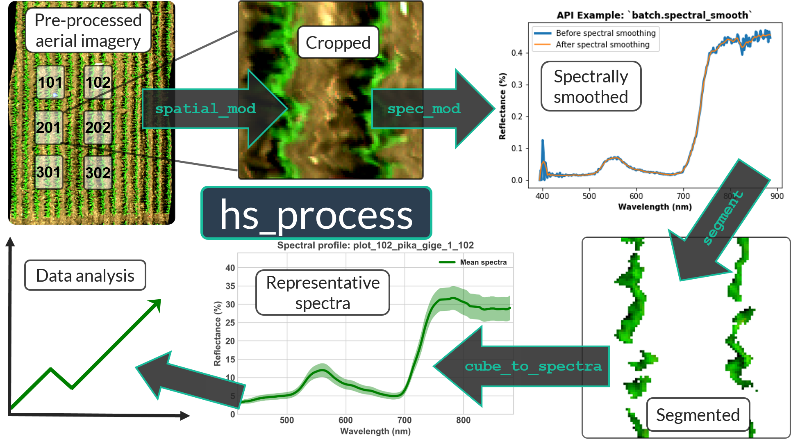

hs_process Documentation¶
An open-source Python package for geospatial processing of aerial hyperspectral imagery
Current version: 0.0.4
hs_process emphasizes the ability to batch process datacubes, with the overall goal of keeping the processing pipeline as "hands-off" as possible. There is also a focus on maintaining the ability to have control over the subjective aspects of image processing (e.g., segmentation thresholds) and achieving repeatability in image post-processing.
Table of Contents¶
Navigate the hs_process Documentation using the "Contents" dropdown in the Navigation Bar
About¶
hs_process is a Python package for geospatial post-processing of aerial hyperspectral imagery. The principle motivation for developing hs_process was to streamline the post-processing steps required prior to hyperspectral data analysis. Although commercial software perhaps exists for such needs, open source software that is both flexible and streamlined did not previously exist. The specific motivations were:
Minimize the time and effort required to perform post-processing tasks.
Minimize (and potentially eliminate) the number of steps where user intervention is required.
Provide a framework for post-processing an entire aerial hyperspectral dataset that, when repeated, does not require any user intervention.
Enable users to more easily document the complex processes and inherently subjective parameters used for post-processing aerial hyperspectral imagery (e.g., segmentation thresholds, spatial plot buffers, etc.).
In addressing these motivations, it was important to keep each post-processing steps as flexible as possible so the specific requirements of individual research objectives can be met.
{kind=link}
Data requirements¶
The minimum data requirement to utilize this package is a pre-processed hyperspectral datacube (i.e., radiometric calibration, georectification, and reflectance conversion should have already been completed). Sample imagery captured from a Resonon Pika II VIS-NIR line scanning imager can be downloaded from this link.
To perform spatial cropping, a polygon boundary file is required with "plot" column indicating the plot number of each boundary feature (an example geojson can be downloaded from this link).
Sample data¶
Intended audience¶
This package was built for those looking for a clean, streamlined solution for post-processing aerial hyperspectral imagery. This package is especially well-suited for R&D departments looking for a straightforward way to achieve repeatable post-processing results so data analysis can proceed more quickly and systematically.
Troubleshooting¶
Please report any issues you encounter through the Github issue tracker.
Code of Conduct¶
Everyone interacting in the packaging project's codebases, issue trackers, chat rooms, and mailing lists is expected to follow the PyPA Code of Conduct.